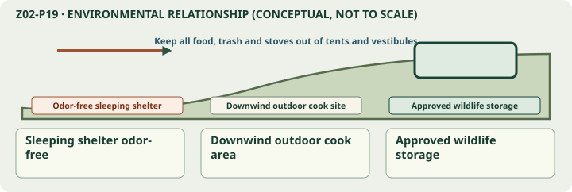

Z02-P19 · Shelter and housing · New manuscript
Separate cooking, food storage and sleeping areas in wildlife country
Keep food odors, cooking spills and scented supplies isolated from tents and sleeping gear.
When it applies · Backcountry and campground sites in bear, raccoon, rodent and wider wildlife habitats.
Equipment · Agency-approved food storage (bear canister, food locker or permitted hang system), separate outdoor stove area and clean sealable odor bags.

Actions
- Locate cooking, eating and dishwashing areas well downwind and separated from sleeping shelters according to local land-agency setback rules.[E27, E03]
- Store all food, trash, toiletries, lip balm and food-stained clothing in approved wildlife-resistant containers or lockers—never inside tents or sleeping bags.[E27]
- Keep portable stoves strictly outdoors at the cooking area; cooking inside tents combines wildlife attraction with lethal carbon monoxide and burn hazards.[E27, C05, C16]
Failure recognition · Snacking inside a sleeping bag or stashing wrappers and cooking pots in a tent vestibule overnight.[E27, C05]
Verify · Confirm sleeping shelters contain zero food, scented items or cooking equipment and that all attractants are secured per unit rules.[E27, ED]
Stop or change course · If aggressive wildlife approaches camp or storage fails, follow local agency safety protocols, maintain safe distance and report to land managers.[E27, E03]
Evidence and editorial notes
- C05 · CPSC · Portable Heaters and Camping Equipment (current web edition)
- Section: Carbon monoxide poisoning from portable camping equipment · Conditions: Tents, campers, vehicles and other enclosed spaces
Support: Fuel-burning camping equipment can lead to fatal carbon monoxide buildup in enclosed spaces.
Limitations: High altitude increases incomplete combustion and CO production. · Conflicting evidence: None; aligns with CDC-CO and NPS guidance.
Editorial note: Hard-stop prohibition against indoor/vestibule/tent combustion. · Specialist reviewer: Carbon monoxide safety and emergency medicine
Primary source · checked 2026-11-24 - C16 · CDC · Carbon Monoxide Poisoning Basics (current web edition)
- Section: Carbon Monoxide Poisoning Basics > Sources and Prevention · Conditions: Any enclosed or semi-enclosed structure, garage, porch, tent, or vehicle
Support: Never burn charcoal, operate camp stoves, or run fuel-burning heaters inside homes, garages, tents, or vehicles even with doors or windows partly open.
Limitations: Vent cracks and open garage doors do not prevent lethal CO accumulation. · Conflicting evidence: Refutes dangerous myth that cracking a tent vent or garage door makes indoor combustion safe.
Editorial note: Hard-stop rule across all Z02 ventilation and Z03 combustion cards. · Specialist reviewer: Carbon monoxide safety and emergency medicine
Primary source · checked 2026-11-24 - E03 · NPS · Finding and Setting Up a Campsite (current web edition)
- Section: Finding a campsite · Conditions: Legal established or designated campsite
Support: Choose a durable legal site suited to the conditions. Campsite rules and physical risks vary by park.
Limitations: Established sites can still develop new hazard trees or flood risk after storms. · Conflicting evidence: None; requires live site inspection even at designated pads.
Editorial note: First gate of shelter site selection. · Specialist reviewer: Land management and wilderness shelter
Primary source · checked 2026-11-24 - E27 · USDA Forest Service · Responsible Recreation (current web edition)
- Section: Responsible Recreation > Preparedness and Wildlife Safety · Conditions: Backcountry camps in bear and wildlife country
Support: Store food, scented items, and cooking gear separately from sleeping shelters according to local land-agency rules to prevent wildlife intrusions into sleeping areas.
Limitations: Required storage method (bear canister, locker, hang) varies by jurisdiction. · Conflicting evidence: None; keeps cooking and food odors separate from shelter enclosures.
Editorial note: Connects camp layout, odor separation, and shelter safety. · Specialist reviewer: Land management and wildlife safety
Primary source · checked 2026-11-24
Source lineage · USFS responsible recreation and NPS camping; new manuscript · Classification · New manuscript.